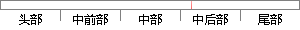

然后添加bin目录的路径和lib目录的路径，如下：
片段位置图

相似结果
相似片段： JAVA环境变量主要配置两个,bin目录和lib目录,分别是JDK的执行和库的编译; bin目录的路径主要添加在系统环境变量的“path”里面; lib目录的路径主要添加在系统环境...
| 标题 | 《Java环境变量的配置(WIN7/XP通用)》 |
| 对比库 | PaperRater云论文库 |
| 网址 | http://www.taody.com/zhishi/e9fb46e1b2da347521f7662a.html |
| 相似率 | 80% （严重抄袭） |
※ 片段修改建议 ※
近似词参考：- 如下：以下
- 目录：目次
系统自动生成语句：然后添加bin目次的路径和lib目次的路径，以下：
注：本片段修改建议为系统自动生成，仅供参考。